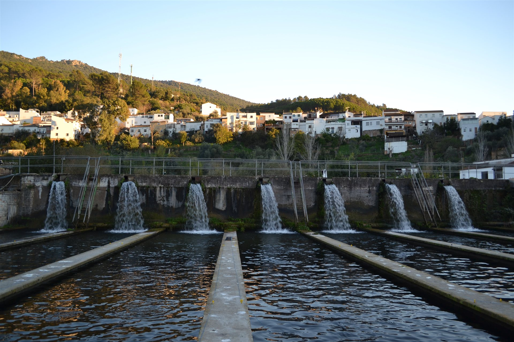
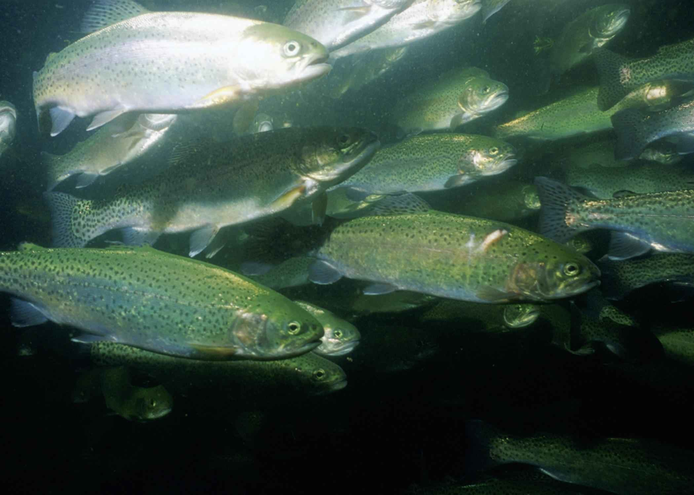

El río
El Majaceite figura en las fuentes como el agua vinculada a la piscifactoría.
EL ORIGEN DEL VÍNCULOSIERRA DE CÁDIZ
AGUA DULCE / MEMORIA VIVA
Agua.
Territorio.
Memoria.

En El Bosque, el río forma parte del paisaje. Y también de su memoria.
La piscifactoría ocupa un lugar en la historia acuícola de la sierra de Cádiz. Las publicaciones de la Junta de Andalucía documentan su vínculo con el agua del Majaceite y la cría de truchas.
Esta página recoge esa relación entre un nombre, un oficio y un territorio. La historia documentada se presenta por separado de una actividad actual que queda por confirmar.
Leer la referencia histórica de la Junta (PDF, nueva pestaña)Una lectura de la actividad histórica.
Sin dibujar un presente que no conocemos.
El Majaceite figura en las fuentes como el agua vinculada a la piscifactoría.
EL ORIGEN DEL VÍNCULOLa prensa de 2019 documenta su trayectoria en la cría de truchas.
ACTIVIDAD HISTÓRICASu historia estuvo ligada al comercio y a la gastronomía local.
MEMORIA DEL TERRITORIOEsquema de relaciones históricas. No representa la distribución del recinto, sus procesos técnicos ni una producción actual.
Diario de Cádiz publicó en abril de 2019 la noticia del cierre de la piscifactoría.
Diario de Cádiz · 05.04.2019Portal de Cádiz informó de negociaciones para la cesión de las antiguas instalaciones. Una negociación no confirma una reapertura.
Portal de Cádiz · 18.05.2025No contamos con confirmación de actividad, venta o acceso al público. El contacto telefónico es el siguiente paso para consultar.
Consultar la situación actualEl Majaceite une el paisaje de Benamahoma y El Bosque. La documentación ambiental describe un denso bosque en galería en este tramo: el río y su vegetación forman una misma escena.

Una mirada al contexto natural, sin implicar acceso al recinto ni disponibilidad de actividades.
Ficha ambiental del Majaceite (PDF, nueva pestaña)Para conocer la situación actual,
consulta antes de desplazarte.